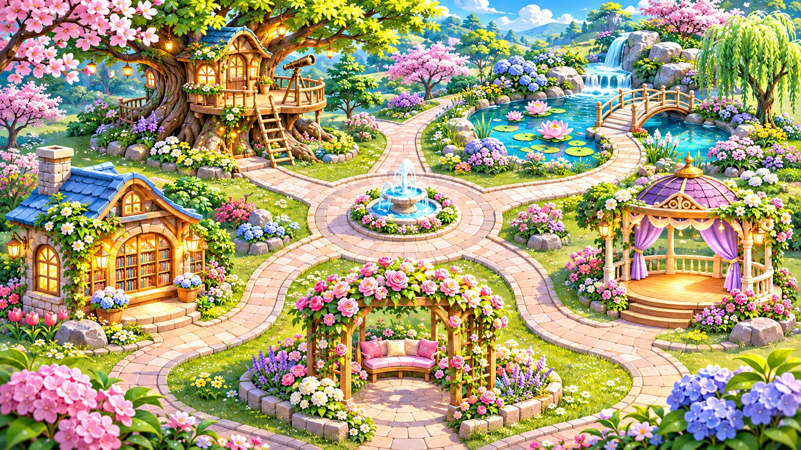

모아의 다섯 정원
함께 걸으며 만나는 작은 배움
⌕
게임 34개
3D 체험
원래 지도

🌳
인지정원
21개 게임
↗
💭
생각정원
3개 게임
↗
📚
학습정원
4개 게임
↗
🎵
음악정원
3개 게임
↗
💗
마음정원
3개 게임
↗
모아
정원을 누르거나 길을 따라 움직여 봐!
정원에 들어가기
⌂ 광장으로
▲
◀
▼
▶
🌳 인지
💭 생각
📚 학습
🎵 음악
💗 마음
방향키·WASD 또는 화면 터치로 이동 · 정원에 가까워지면 Enter
← 정원으로 돌아가기
← 이전
다음 →
← 정원으로 돌아가기
원하는 게임 바로 찾기
34개 게임 모두 만나기
탐험하지 않아도 바로 찾을 수 있어요.
게임 이름 검색
 모아
모아
 모아의 다섯 정원함께 걸으며 만나는 작은 배움
모아
모아의 다섯 정원함께 걸으며 만나는 작은 배움
모아